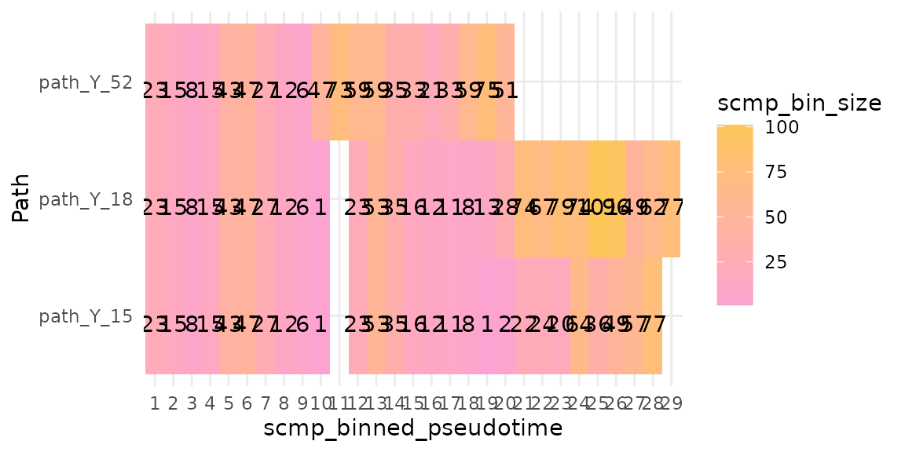

Abstract
scMaSigPro needs one pseudotime value and one path label per cell, and nothing else from the tool that inferred the trajectory. This vignette describes that input and builds it from the output of slingshot, from a trajectory graph and from a Monocle3 object.
The input contract
Trajectory inference tools describe a trajectory in different ways: slingshot fits one principal curve per lineage and gives every cell a pseudotime and a weight on each lineage (Street et al. 2018), Monocle3 learns a principal graph and gives every cell one pseudotime from a root node (Cao et al. 2019), and tradeSeq takes such weights to fit its own models (Van den Berge et al. 2020). scMaSigPro needs much less: for every cell,
- one pseudotime value, a number that orders the cells of a path, and
- one path label, the path that the cell belongs to.
Every cell has one path label: scMaSigPro uses hard assignments. When the paths of a trajectory share their first cells, as the branches of a tree share its trunk, those cells get labels of their own:
- the cells on every path get the root label;
- the cells on some of the paths but not all of them get a
link label, the names of those paths joined by a
separator,
_links_by default; - every other cell gets the name of its path, an end path.
sc.restruct() uses these labels to add the bins of the
root and of the links to the end paths that share them; the Shared
root vignette shows how.
The two columns enter scMaSigPro in one of two ways:
-
as_scmp()takes aSingleCellExperimentwhosecolData()holds them; -
create_scmp()takes a count matrix, genes by cells, and a data frame with one row per cell, named by cell, that holds them.
The rest of this vignette builds this table from the output of
trajectory tools. The bundled data set multi.lin.sce serves
as the example: a simulated trajectory with three end points (Van den Berge et al. 2020; Saelens et al.
2019), whose cells Monocle3 placed on three paths that share a
root and a link.
From lineage weights
assign_paths() turns lineage weights into path labels.
It takes a matrix of weights, one row per cell and one column per
lineage, and the pseudotime of each cell, either as a matrix of the same
shape (one pseudotime per lineage, as slingshot gives it) or as one
vector (one pseudotime shared by every lineage, as Monocle3 gives it). A
cell is on a lineage when its weight there is at least
min_weight, 0.5 by default, and its pseudotime there is
known.
A small example with three lineages shows the rules:
weights <- rbind(
cell1 = c(A = 1, B = 1, C = 1),
cell2 = c(A = 0.9, B = 0.8, C = 0.1),
cell3 = c(A = 1, B = 0, C = 0),
cell4 = c(A = 0, B = 0, C = 0.7),
cell5 = c(A = 0.2, B = 0.3, C = 0.1)
)
pseudotime <- rbind(
cell1 = c(A = 1, B = 1.2, C = 0.8),
cell2 = c(A = 4, B = 5, C = NA),
cell3 = c(A = 9, B = NA, C = NA),
cell4 = c(A = NA, B = NA, C = 7),
cell5 = c(A = 2, B = 2, C = 2)
)
assign_paths(pseudotime, weights)
#> 1 of 5 cells are on no lineage (no weight of at least 0.5 with a pseudotime) and are left out.
#> Pseudotime Path
#> cell1 1.0 root
#> cell2 4.5 A_links_B
#> cell3 9.0 A
#> cell4 7.0 Ccell1 is on every lineage and becomes a root cell;
cell2 is on A and B only and gets
the link label A_links_B; cell3 and
cell4 are on one lineage each. A cell on several lineages
gets the mean of its pseudotimes there. cell5 is on no
lineage and is left out, with a message.
The weights are compared with min_weight as they are
given. slingshot’s curve weights are close to 1 on every lineage for the
cells of the root; for weights that add up to 1 in each cell, a
min_weight below 1 divided by the number of lineages keeps
the root cells.
From slingshot
slingshot needs a low-dimensional embedding and clusters of cells.
Here the embedding is the t-SNE of multi.lin.sce and the
clusters are its Monocle3 path labels, with the root as the start and
the three end paths as the end clusters. This section runs when
slingshot and DelayedMatrixStats, which its lineage inference needs, are
installed.
leaves <- c("path_Y_15", "path_Y_18", "path_Y_52")
sds <- slingshot::slingshot(
reducedDim(multi.lin.sce, "TSNE"),
clusterLabels = colData(multi.lin.sce)$group,
start.clus = "root",
end.clus = leaves
)
slingshot::slingLineages(sds)
#> $Lineage1
#> [1] "root" "path_Y_18|path_Y_15" "path_Y_15"
#>
#> $Lineage2
#> [1] "root" "path_Y_18|path_Y_15" "path_Y_18"
#>
#> $Lineage3
#> [1] "root" "path_Y_52"Each lineage ends in one of the end clusters, which gives it its name:
ends <- vapply(
slingshot::slingLineages(sds), function(l) l[length(l)], character(1)
)
time <- slingshot::slingPseudotime(sds)
weights <- slingshot::slingCurveWeights(sds)
colnames(time) <- colnames(weights) <- ends
cells <- assign_paths(time, weights)
table(cells$Path)
#>
#> path_Y_15 path_Y_15_links_path_Y_18 path_Y_15_links_path_Y_52
#> 352 159 2
#> path_Y_18 path_Y_18_links_path_Y_52 path_Y_52
#> 720 3 545
#> root
#> 196The two tools draw the borders between the root, the link and the end
paths in different places; slingshot, for one, puts fewer cells in the
root than Monocle3 does here. Soft weights also place a few cells on two
lineages that share nothing but the root, here path_Y_52
and one of the other two; their labels look like links, but no segment
of the trajectory joins those paths. They are so few that the simplest
choice is to leave them out:
link <- "path_Y_15_links_path_Y_18"
cells <- cells[cells$Path %in% c("root", link, leaves), ]
table(
slingshot = cells$Path,
monocle3 = colData(multi.lin.sce)[rownames(cells), "group"]
)
#> monocle3
#> slingshot path_Y_15 path_Y_18 path_Y_18|path_Y_15 path_Y_52
#> path_Y_15 297 0 4 0
#> path_Y_15_links_path_Y_18 6 0 18 19
#> path_Y_18 4 676 21 19
#> path_Y_52 0 0 0 460
#> root 0 0 0 0
#> monocle3
#> slingshot root
#> path_Y_15 51
#> path_Y_15_links_path_Y_18 116
#> path_Y_18 0
#> path_Y_52 85
#> root 196The cell table goes to create_scmp() with the counts of
its cells. The workflow then runs as for any other input; here on the
first 100 genes, with the root and the link added to the end paths by
sc.restruct():
genes <- rownames(multi.lin.sce)[seq_len(100)]
scmp_ob <- create_scmp(
counts = counts(multi.lin.sce)[genes, rownames(cells)],
cell_data = cells,
ptime_col = "Pseudotime",
path_col = "Path"
)
scmp_ob <- sc.squeeze(scmp_ob)
scmp_ob <- sc.restruct(scmp_ob,
end_node_list = as.list(leaves),
root_node = "root",
link_node_list = list(link),
verbose = FALSE
)
plotBinTile(scmp_ob)
scmp_ob <- sc.set.poly(scmp_ob, poly_degree = 2)
scmp_ob <- sc.p.vector(scmp_ob, verbose = FALSE)
scmp_ob <- sc.t.fit(scmp_ob, verbose = FALSE)
scmp_ob <- sc.filter(scmp_ob, rsq = 0.7, vars = "groups")
res <- scmpResults(scmp_ob)
colSums(as.data.frame(res[, grep("^sig_", colnames(res))]))
#> sig_path_Y_18vspath_Y_15 sig_path_Y_52vspath_Y_15 sig_path_Y_15
#> 22 27 25From a trajectory graph
Tools that describe a trajectory as a graph, such as the principal
graph of Monocle3 or a minimum spanning tree of clusters, give every
cell a node of the graph. paths_from_graph() turns the
graph into lineage weights: each lineage is the path from the root node
to an end node, and a cell has weight 1 on the lineages that pass
through its node and 0 elsewhere. It finds the paths with the igraph
package (Csárdi and Nepusz 2006).
The graph here has the Monocle3 path labels of
multi.lin.sce as its nodes: the root joins the end path
path_Y_52 and the link, and the link joins the other two
end paths.
edges <- rbind(
c("root", "path_Y_52"),
c("root", "path_Y_18|path_Y_15"),
c("path_Y_18|path_Y_15", "path_Y_15"),
c("path_Y_18|path_Y_15", "path_Y_18")
)
cell_node <- colData(multi.lin.sce)$group
names(cell_node) <- colnames(multi.lin.sce)
graph_weights <- paths_from_graph(cell_node, edges, root = "root")
head(graph_weights)
#> path_Y_52 path_Y_15 path_Y_18
#> C2 1 1 1
#> C3 1 1 1
#> C4 0 1 0
#> C5 1 1 1
#> C6 1 0 0
#> C7 1 1 1The end nodes are the nodes with one edge other than the root, in the
order in which they appear in edges; endpoints
chooses them. With the Monocle3 pseudotime, shared by every lineage,
assign_paths() gives back the path labels of the data set,
with the link written in the _links_ format:
graph_cells <- assign_paths(
colData(multi.lin.sce)$Monocle3_Pseudotime, graph_weights
)
table(graph_cells$Path)
#>
#> path_Y_15 path_Y_15_links_path_Y_18 path_Y_18
#> 307 43 676
#> path_Y_52 root
#> 498 453From Monocle3
A Monocle3 cell_data_set after
learn_graph() and order_cells() holds the same
pieces: the principal graph, the nearest node of each cell, the root
node and the pseudotime. The code below builds the cell table from them
with paths_from_graph() and assign_paths(). It
is not run here: monocle3 is distributed on GitHub, not on CRAN or
Bioconductor, so scMaSigPro cannot depend on it.
library(monocle3)
# `cds`: a cell_data_set after learn_graph() and order_cells()
graph <- principal_graph(cds)[["UMAP"]]
aux <- principal_graph_aux(cds)[["UMAP"]]
# The nearest node of each cell, as a node name, and the root node
nearest <- aux$pr_graph_cell_proj_closest_vertex
cell_node <- igraph::V(graph)$name[nearest[, 1]]
names(cell_node) <- rownames(nearest)
root <- aux$root_pr_nodes
# One lineage per end node, then the path label of each cell
weights <- paths_from_graph(cell_node, igraph::as_edgelist(graph),
root = root
)
cells <- assign_paths(pseudotime(cds), weights)
scmp_ob <- create_scmp(
counts = counts(cds)[, rownames(cells)],
cell_data = cells,
ptime_col = "Pseudotime",
path_col = "Path"
)The principal graph often has more end nodes than the branches of
interest, and a graph learnt on several partitions has parts that the
root cannot reach; endpoints names the end nodes of the
lineages to analyse, which must be reachable from the root. Cells on
none of these lineages, and cells with an infinite pseudotime, are left
out.
Other tools
Any tool will do that gives a pseudotime and a lineage for every
cell. With lineage weights, as slingshot and tradeSeq give them,
assign_paths() makes the labels; with a graph of nodes,
paths_from_graph() makes the weights first. With hard
labels already, as multi.lin.sce has them, add the two
columns to the colData() and call as_scmp(),
or pass the table to create_scmp().
Session information
sessionInfo()
#> R version 4.6.2 (2026-10-29)
#> Platform: x86_64-pc-linux-gnu
#> Running under: Ubuntu 24.04.5 LTS
#>
#> Matrix products: default
#> BLAS: /usr/lib/x86_64-linux-gnu/openblas-pthread/libblas.so.3
#> LAPACK: /usr/lib/x86_64-linux-gnu/openblas-pthread/libopenblasp-r0.3.26.so; LAPACK version 3.12.0
#>
#> locale:
#> [1] LC_CTYPE=C.UTF-8 LC_NUMERIC=C LC_TIME=C.UTF-8
#> [4] LC_COLLATE=C.UTF-8 LC_MONETARY=C.UTF-8 LC_MESSAGES=C.UTF-8
#> [7] LC_PAPER=C.UTF-8 LC_NAME=C LC_ADDRESS=C
#> [10] LC_TELEPHONE=C LC_MEASUREMENT=C.UTF-8 LC_IDENTIFICATION=C
#>
#> time zone: UTC
#> tzcode source: system (glibc)
#>
#> attached base packages:
#> [1] stats4 stats graphics grDevices utils datasets methods
#> [8] base
#>
#> other attached packages:
#> [1] ggplot2_4.0.3 SingleCellExperiment_1.34.0
#> [3] SummarizedExperiment_1.42.0 Biobase_2.72.0
#> [5] GenomicRanges_1.64.0 Seqinfo_1.2.0
#> [7] IRanges_2.46.0 S4Vectors_0.50.3
#> [9] BiocGenerics_0.58.1 generics_0.1.4
#> [11] MatrixGenerics_1.24.0 matrixStats_1.5.0
#> [13] scMaSigPro_0.99.0 BiocStyle_2.40.0
#>
#> loaded via a namespace (and not attached):
#> [1] gtable_0.3.6 xfun_0.62
#> [3] bslib_0.12.0 lattice_0.23-1
#> [5] vctrs_0.7.3 tools_4.6.2
#> [7] slingshot_2.20.0 parallel_4.6.2
#> [9] pkgconfig_2.0.3 Matrix_1.7-6
#> [11] RColorBrewer_1.1-3 S7_0.2.2
#> [13] desc_1.4.3 sparseMatrixStats_1.24.0
#> [15] TrajectoryUtils_1.20.0 lifecycle_1.0.5
#> [17] compiler_4.6.2 farver_2.1.2
#> [19] textshaping_1.0.5 codetools_0.2-20
#> [21] htmltools_0.5.9 sass_0.4.10
#> [23] yaml_2.3.12 pkgdown_2.2.1
#> [25] jquerylib_0.1.4 MASS_7.3-66
#> [27] BiocParallel_1.46.0 DelayedArray_0.38.2
#> [29] cachem_1.1.0 abind_1.4-8
#> [31] princurve_2.1.6 digest_0.6.39
#> [33] bookdown_0.48 labeling_0.4.3
#> [35] fastmap_1.2.0 grid_4.6.2
#> [37] cli_3.6.6 SparseArray_1.12.3
#> [39] magrittr_2.0.5 S4Arrays_1.12.1
#> [41] withr_3.0.3 DelayedMatrixStats_1.34.0
#> [43] scales_1.4.0 rmarkdown_2.32
#> [45] XVector_0.52.0 igraph_2.3.4
#> [47] otel_0.2.0 ragg_1.5.2
#> [49] evaluate_1.0.5 knitr_1.52
#> [51] rlang_1.3.0 Rcpp_1.1.2
#> [53] glue_1.8.1 BiocManager_1.30.27
#> [55] jsonlite_2.0.0 R6_2.6.1
#> [57] systemfonts_1.3.2 fs_2.1.0